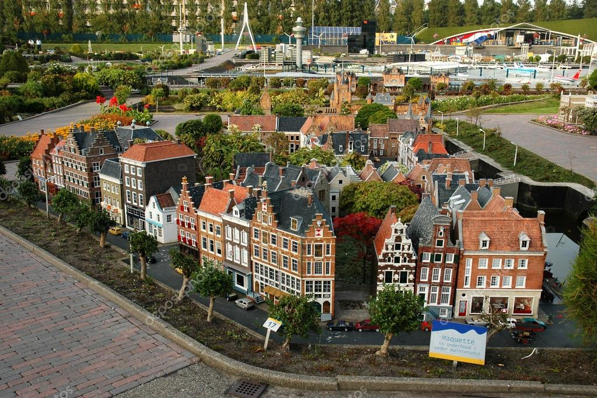

Hága
Scheveningen
Scheveningen a város népszerű tengerparti üdülőhelye, amely a gyönyörű homokos strandok és a tengerparti szórakozás központja. Az ikonikus móló a terület egyik legismertebb látványossága, amelyen egy óriáskerék és éttermek találhatók. A bátrabbak számára bungee jumping és zipline is elérhető. A tengerpart mellett a Kurhaus, egy történelmi luxushotel, tovább növeli a hely varázsát. A téli időszakban a karácsonyi piacok, nyáron pedig a vízisportok vonzzák az érdeklődőket.

Madurodam
A Madurodam egy lenyűgöző miniatűr park, amely Hollandia nevezetességeit és történelmi helyszíneit mutatja be. A látogatók méretarányos modellekben láthatják például a Rijksmuseumot, az amszterdami csatornákat és a rotterdami kikötőt. Interaktív elemei, mint a vízszabályozás működésének bemutatása, szórakoztató módon ismertetik meg a látogatókat az ország történelmével és innovációival. A park tökéletes családok számára, és minden korosztály számára élvezetes élményt kínál.
Escher Múzeum
Az Escher Múzeum a világhírű grafikus, M.C. Escher alkotásait mutatja be, aki a térbeli paradoxonok és az optikai illúziók mestere volt. A látogatók megcsodálhatják Escher legismertebb műveit, például a végtelen lépcsőket vagy a lehetetlen objektumokat ábrázoló grafikákat. A múzeum különleges atmoszféráját fokozza, hogy egy elegáns királyi palotában található. Az interaktív kiállítások a fiatalabb látogatók számára is lebilincselő élményt nyújtanak.